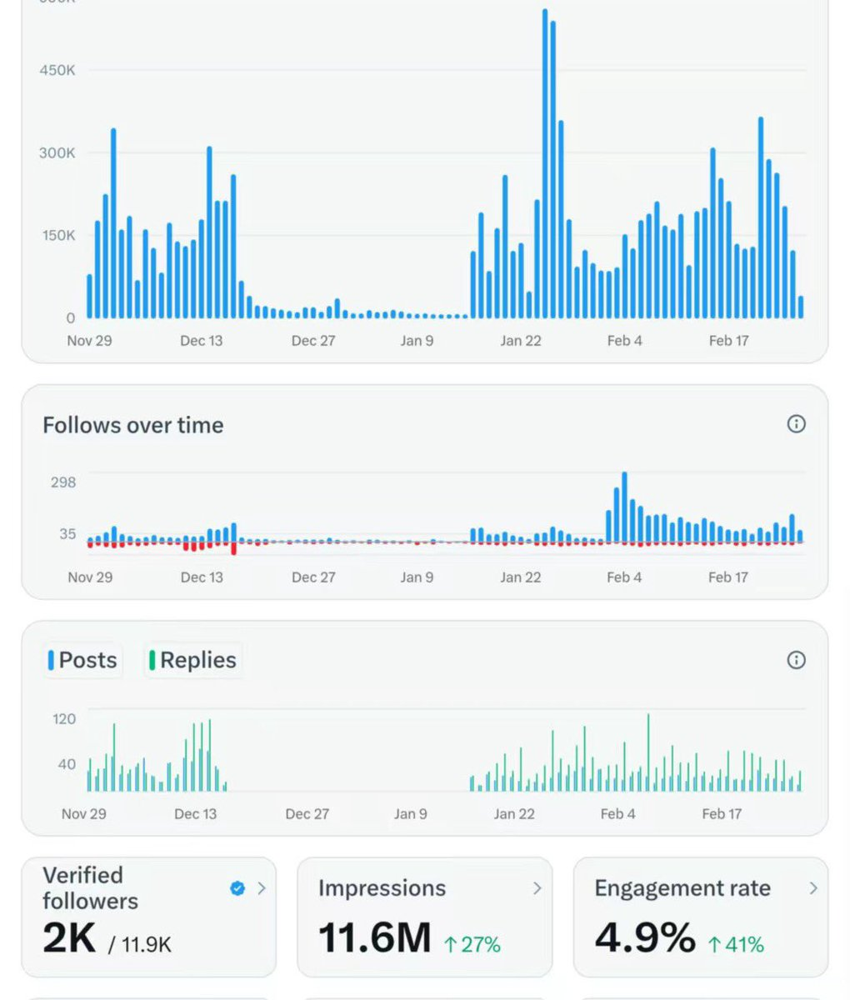

lovely水
@lovelyshuimao
@Konekoutena 2500认证关注者怎么搞的

枫糖小猫
@Konekoutena
我的X刚刚解锁了收益分成和订阅服务双徽章，很多人问我该怎么达到最低标准的三个月五百万展示？我晒一下我的三个月数据，我的展示量是一千一百万，远超五百万的门槛。这其中我还有一个月在住院，没有发任何内容。达到这个门槛其实并不难，只要账号达到一定的体量，就是水到渠成的事。自媒体的成长并不 https://t.co/xKm6Pq1eex